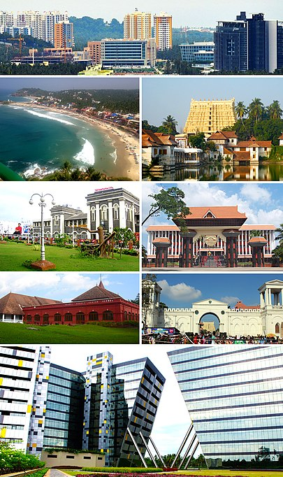
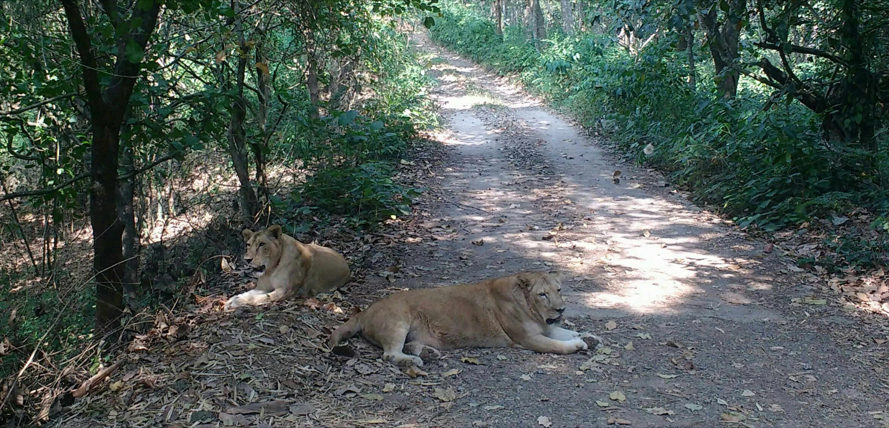
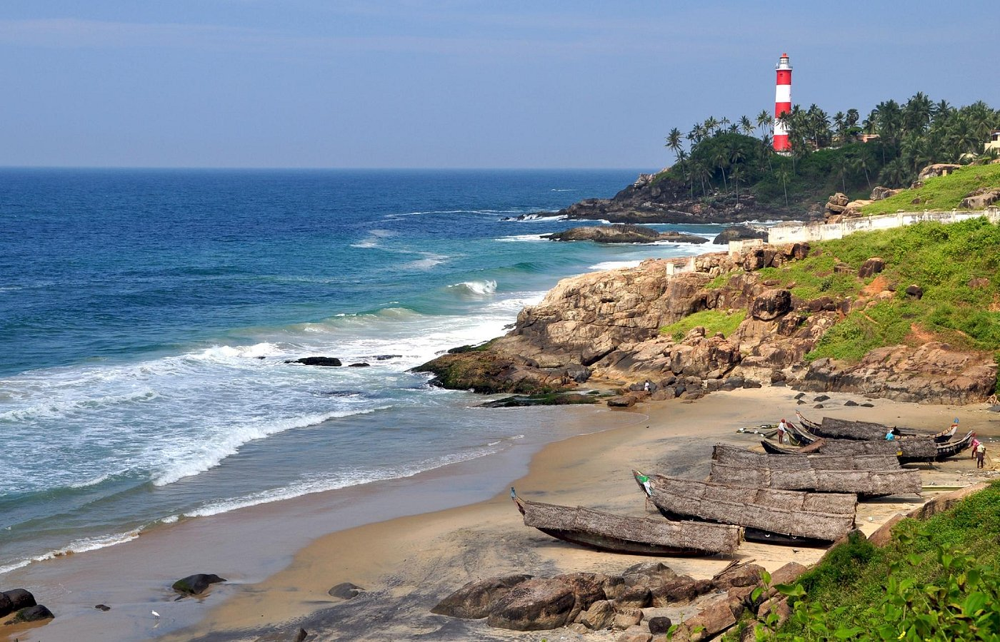

Thiruvananthapuram (or Trivandrum) is the capital of the southern Indian state of Kerala. It's distinguished by its British colonial architecture and many art galleries. It’s also home to Kuthira Malika (or Puthen Malika) Palace, adorned with carved horses and displaying collections related to the Travancore royal family, whose regional capital was here from the 18th–20th centuries.
The Padmanabhaswamy temple is a Hindu temple located in Thiruvananthapuram, the state capital of Kerala, India. The name of the city of Thiruvananthapuram in Malayalam translates to "The City of Lord Ananta", referring to the deity of the Padmanabhaswamy temple.

The Neyyar Wildlife Sanctuary in the southern state of Kerala in India is spread over the southeast corner of the Western Ghats, and covers a total area of 128 km2 (49 sq mi). It is located between 77° 8’ to 77° 17’ east longitude and 8° 29’ to 8° 37’ north latitude, central location 8°33′N 77°12.5′E. Although it was declared as a sanctuary in 1958, not much was done about wildlife conservation, until 1985, when a separate wildlife wing was set up and as a result, conservation efforts have gathered momentum. It is part of the Agasthyamala Biosphere Reserve.
Kovalam is a small coastal town in the southern Indian state of Kerala, south of Thiruvananthapuram. At the southern end of Lighthouse Beach is a striped lighthouse with a viewing platform. Palm-backed beaches also include Hawa Beach and Samudra Beach. Heading south, Vizhinjam Juma Masjid mosque overlooks the busy fishing harbor. Inland, Sagarika Marine Research Aquarium displays technology used in pearl production.
